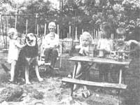

A business for parents with little cash and lots of love:
Four years ago, Y found myself in a situation that many folks have to Lace at one time or another in these days of economic uncertainty ...I was unemployed and-worse .yet-had two small children to support: 3 needed to come up with a profitable business venture That would generate a few much needed dollars for the family "pot" and allow me to stay home with my preschool daughters. :So, since I had always enjoyed being around children, I decided to start a small day-care business in our house.
Of course, jumping into that undertaking was a rather risky proposition ...out I'm now able to say, as a result of my experience, that a home-based childcare business can be an ideal occupation for a parent who's determined to stay at home with his or her children and yet earn a steady income. Child care is a surprisingly profitable enterprise, too: In just a few months, my venture grew from little more than part-time babysitting to operating a full-fledged certified child-care center ...and I've found that I can make more money from this at home work than from any of the outside jobs I've held in the past. In fact, it's possible to earn around $300 a month taking full-time care of only two children (depending upon your locality and your clientele, you will probably decide to charge between 70 cents and $1.00 per hour per child). And while doing so, of course, you'll be able to spend time with your own youngsters and provide them with playmates.
MAKE IT LEGAL
The first step in starting a day-care business is to contact the nearest office of the Department of Human Resources or the Department of Social Services. (They're located in every state capital and in many other large cities as well.) The folks there should be able to tell you about the current regulations that govern in-home services in your state. In some areas, a person can legally take care of as many as five children without being formally licensed ...while other states require certification for registration) if even one child is taken into someone else's dome for pay.
Whenever state regulations offer you the choice of being licensed or not, you'd do well to consider the pros and cons of each option in your particular situation. Obviously, a licensed day-care business will be subject to strict state and federal regulations ...and you'll have to deal with a lot of paperwork. Furthermore, the process of obtaining a license is time consuming in itself: As a potential operator, you'll probably have to submit-to the state licensing agency-detailed applications and floor plans of the space you intend to use ...and you can expect that your Rome will be subject to thorough fire, health, and building inspections before you receive your license.
However, there are a number of advantages to legalizing your business, too. For one thing, licensed child-care facilities can frequently qualify to receive government money to subsidize children from low-income families. Only a very small percentage of the youngsters at my center have their tuition paid by federal funds ...but it's always nice to know that I can expect to receive those fees regularly.
Another advantage of certification is that, in many states, the USDA has reimbursed some owners of licensed centers for the cost of food prepared for the children. In addition, "lending libraries" of toys are sometimes made available to certified nurseries and day-care facilities. Some local social agencies even publish monthly bulletins that contain helpful hints for organizing and operating your business.
THE MASTER PLAN
Whether you choose (or are required) to get a license or not, it's important to plan the operation thoroughly before you open your door for business. When parents apply for your services, have them fill out a registration form listing general and medical information about each youngster they want to put under your supervision. This fact sheet should give the child's name, nickname, birthday, and age ...the parent's name, address, and telephone number (both at home and at work) ...and the family physician's name and phone number, plus a list of the tot's known allergies ' if any ! and instructions for any special medications that are to be administered. You might also want to ask for the names of all persons who are authorized to nick up the child, and obtain written permission to transport the youngster in your car if necessary. (Special permission slips for specific field trips can be issued as the occasion arises.)
One of the most important features of a good day-care center-and the factor that will make your business stand 3ut from the usual babysitting nurseries is a tightly scheduled, imaginative timetable. Creative organization will keep things running smoothly and entertain your young charges, while giving them a sense of security. On most days, my center operates on the schedule shown here, and you might want to consider adapting a similar outline to your facility.
8:00 - 10:00 a.m. Free play indoors (educational games, blocks)
10:00 - 10:30 a.m. Morning snack
10:30 - 11:00 a.m. Outdoor play (team games, climbing, riding)
11:00 - 11:30 a.m. Creative time (coloring, arts and crafts)
11:30 - 12:00 p.m. Story time
12:00 - 12:30 p.m. Lunch
12:30 - 1:30 p.m. Nap time
1:30 - 3:00 p.m. Free play indoors
3:00 - 3:30 p.m. Afternoon snack
3:30 - 4:00 p.m. Outdoor play
Reminder of Day Free play
You'll notice that my timetable alternates free indoor play with supervised outdoor games, and quiet times with active periods. I also use short snack breaks, stories, naps, and meals to break up the day. The key, I think, is to provide the children with a variety of activities that will keep them busy. Remember, though, to allow for some flexibility in your outline ...since it's always possible that you'll have to spend a few minutes here and there coaxing a stubborn child from one activity to the next.
Another important concern, of course, is planning meals and snacks for your day-care customers. Most nutritionists now agree that children's diets greatly affect their attitudes and behavior ...so if you want to maintain a peaceful atmosphere, be careful to provide only wholesome .food for the youngsters. Ttry to plan snacks that are low in sugar, yet crunchy and satisfying. Fresh fruit or cheese and crackers are perfect in the morning, while carrot sticks and juices make good afternoon treats.
PROBLEM PARENTS
Once you've been in the day-care business for a while, you'll undoubtedly find -as I did that parents can be more troublesome than the children they leave with you! One of my customers used to drop her tots off at 2:30 every afternoon, expecting me to give them lunch. Another mother consistently sent her son to the door with a candy bar in his hand, which naturally set off a storm of protest from the other youngsters. After several such annoying experiences, I decided to type up a list of general guidelines and hand it out to the parents of my charges. My rules include the following reminders:
[1] The noonday meal will be served at 12:00 sharp. Any child arriving after 12:15 should already have lunch in his or her tummy.
[2] Please don't send your child with chewing gum, candy, or cookies in his or her pockets or mouth. All such items will be confiscated.
[3] ALL children will lie down at 12:30 for a nap/ rest.
Of course, any other regulations you might want to include could be added.
MONEY MATTERS
When you investigate the cost of new toys and playground equipment (such as monkey bars, tricycles, and sandboxes), you might despair of ever making a profit in the day-care business. Well, there are ways to trim those costs: Keep an eye on your local newspaper's classified ads for listings of inexpensive secondhand toys, and be sure to visit local garage and yard sales. Often, you'll strike it lucky ...and find a barely used $20 plaything for only $5. You might also try placing notices on bulletin boards or in your community newsletter, or-as I mentioned before-checking with the Social Services department for a possible "toy exchange" in your area.
Since the purchase of play equipment is a legitimate business expense, you can claim the cost of such items as a tax deduction. However, if your own offspring also use the toys, you'll have to subtract a percentage of the cost of these "business supplies" to compensate for the amount of wear inflicted by your children. Other possible deductions include the cost of food prepared for your charges (unless you're reimbursed for that expense by the USDA) ...an appropriate portion of your utilities and phone bills ...some household supplies (such as toilet paper, soap, napkins, detergent) ...and the cost of business-related cleaning and repairs (clogged drains, broken windows, dirty carpets).
My main concern, when I was still getting used to running my own in-home child-care business, was the problem of how to collect the money. I now make it a policy to ask each parent to let me know-in writing when he or she plans to pay the bill each month. (This information is usually included on the application form.) When any customer lets a payment slide four or five days past that date, I send out a statement ...and if there's no response to that reminder within a week, I simply discontinue my services. I've found that such a system prevents the customer from running up a bill he or she may never be able to pay ...while I avoid providing free day-care service!
Although it's doubtful that you'll become rich overnight in the day-care business, watching youngsters in your own home does represent a sensible alternative occupation for the parent who needs to earn some extra cash without giving up precious time with his or her own children. If a house full of energetic tykes doesn't give you pause, why not go ahead and try it? You'll have the satisfaction of being your own boss ...in your own home!
|
 |
|
|